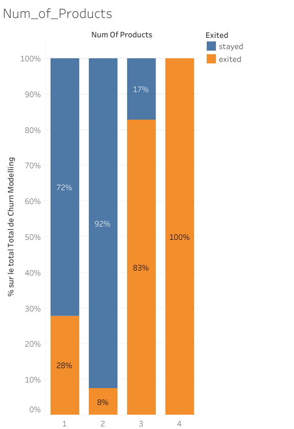

Nous avons un enchantions de 10000 clients de la banque. On a effectué un AB test (c’est-à-dire comparer deux groupes en rapport avec une variable). Pour notre cas, l’AB test sert à faire une comparaison entre les groupes « nom of products » (1,2,3,4) et le fait de quitter la banque.
On a utilisé le logiciel de business intelligence « tableau », ces résultats sont présentés ci-dessous dans la figure.
Les résultats obtenus montrent que ceux qui ont 4 produits ont le taux de sortie de la banque le plus élevé, qui est de 100% lorsque nous passons de 4 à 3 produits, le taux tombe à 83%. Ce qui veut dire que les données ont diminué de 8% pour ceux qui ont deux produits. Cela veut dire les clients doivent avoir un maximum de deux produits pour qu’elle puisse maintenir son taux de sortie en dessous de 9%
Par ailleurs, ceux possédant une carte a un taux d’exit de 28%
En somme, nous recommandons à la banque de conseiller au client de prendre seulement deux produits(1 & 2)